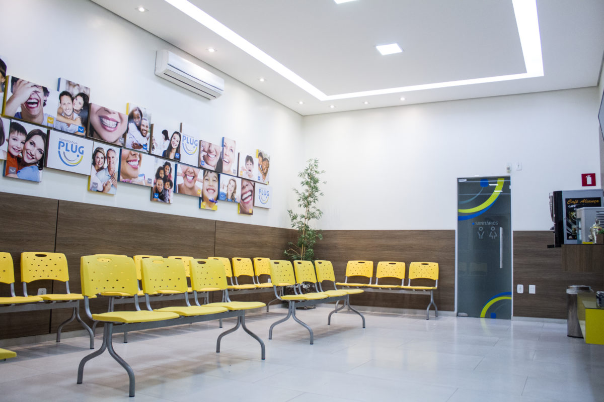
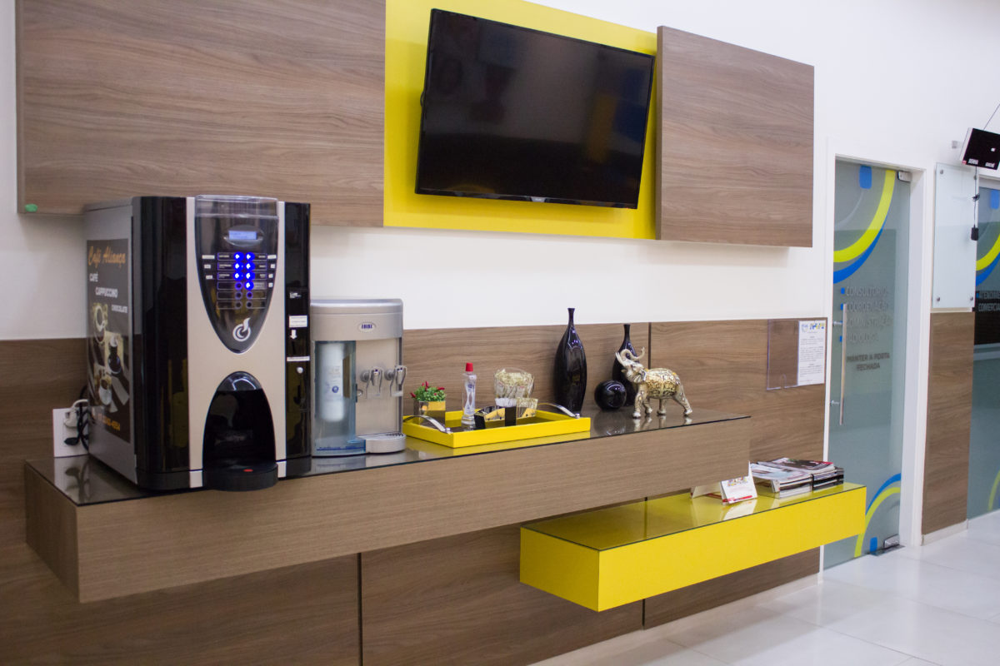

Alinhamento e reabilitação
Ortodontia
Planejamento para o alinhamento dos dentes e a relação entre as arcadas, conforme cada etapa do desenvolvimento.
Odontologia multidisciplinar
Da prevenção à reabilitação oral, conheça as especialidades da Clinimed e encontre o cuidado adequado às suas necessidades.

Conheça nossas especialidades
Explore as principais áreas de atendimento. A escolha do procedimento e da técnica depende sempre de uma avaliação individual.
11 tratamentos disponíveis nesta seleção.
Planejamento para o alinhamento dos dentes e a relação entre as arcadas, conforme cada etapa do desenvolvimento.
Avaliação e planejamento da reposição de dentes ausentes, considerando mastigação, estética e saúde bucal.
Opções de clareamento acompanhadas por profissional, com indicação baseada na saúde dos dentes e gengivas.
Planejamento estético para forma e aparência do sorriso, com atenção à preservação da estrutura dental.
Alternativas para substituir ou restaurar dentes, sempre considerando conforto, fala e função mastigatória.
Recuperação da forma e da função dos dentes com materiais restauradores escolhidos após avaliação.
Avaliação e acompanhamento das gengivas e dos tecidos que sustentam os dentes.
Atenção à saúde bucal infantil, aos hábitos de higiene e ao desenvolvimento dos dentes.
Tratamento da parte interna do dente quando indicado, buscando preservar a estrutura natural.
Procedimentos cirúrgicos planejados após avaliação, com orientações antes e depois da intervenção.
Procedimentos individualizados que consideram a relação entre sorriso e face e as possibilidades para cada caso.
As informações são educativas e não substituem avaliação odontológica. Consulte a equipe sobre a disponibilidade de procedimentos e técnicas específicas.

O cuidado começa com uma conversa
Antes de escolher um tratamento, é importante compreender suas necessidades e conversar sobre as possibilidades.
Compartilhe suas dúvidas, expectativas e o motivo da consulta com nossa equipe.
O profissional examina sua situação e identifica se há necessidade de exames ou avaliações complementares.
Receba orientações sobre as alternativas pertinentes ao seu caso para decidir com mais segurança.
Conteúdo para você
Nosso blog reúne explicações acessíveis sobre cuidados odontológicos e dúvidas comuns dos pacientes.
Dúvidas frequentes
Se ainda houver dúvidas, nossa equipe pode orientar o próximo passo.
A indicação depende do histórico, das necessidades e de uma avaliação clínica. A equipe pode orientar o agendamento de uma consulta para entender o seu caso.
O planejamento de qualquer procedimento exige uma análise profissional. Exames ou etapas adicionais podem ser recomendados conforme a situação individual.
Em alguns casos, diferentes especialidades fazem parte de um mesmo plano de cuidado. A sequência e a necessidade de cada etapa são definidas após avaliação.
Você pode conversar com a equipe pelo WhatsApp ou acessar a página de Contatos para encontrar endereço, telefone e horário de funcionamento.
O próximo passo
Entre em contato com a Clinimed e agende uma avaliação para entender qual cuidado é adequado ao seu caso.